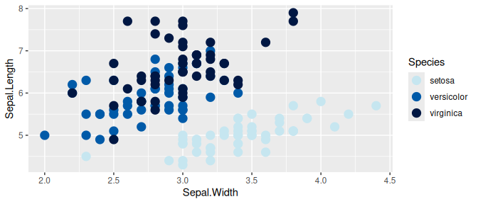

An R color palette for ggplot2 using NOAA Fisheries branding colors

{nmfspalette} implements these steps to create a ggplot2 compatible palette according to NOAA Fisheries branding (NOAA internal only).
Installation
To install from GitHub use the following:
remotes::install_github("nmfs-ost/nmfspalette")
#>
#> ── R CMD build ─────────────────────────────────────────────────────────────────
#> * checking for file ‘/tmp/Rtmp3w1WfO/remotes1b2353225737/nmfs-ost-nmfspalette-8e0fa0e/DESCRIPTION’ ... OK
#> * preparing ‘nmfspalette’:
#> * checking DESCRIPTION meta-information ... OK
#> * checking for LF line-endings in source and make files and shell scripts
#> * checking for empty or unneeded directories
#> Omitted ‘LazyData’ from DESCRIPTION
#> * building ‘nmfspalette_3.0.0.000.tar.gz’To load the package, use:
library(nmfspalette)Contributing
We welcome contributions to {nmfspalette}. You are welcome to make any changes you would like on a fork and submit a pull request. For more substantial changes or to create a branch, please contact sophie.breitbart@noaa.gov (NOAA Affiliates only). We ask that all contributors adhere to The NOAA Fisheries Integrated Toolbox code of conduct.
Usage
To learn how to use nmfspalette, please check out the interactive learnr tutorial.
Extract an interpolated color palette from the default “oceans” palette.
You can change the number of colors (10 shown below).
nmfspalette::nmfs_palette("oceans")(10)
#> [1] "#C6E6F0" "#8CCBE3" "#53B0D7" "#1F95CF" "#0072BB" "#004295" "#002B7B"
#> [8] "#002467" "#001D55" "#001743"Palettes
To see the palettes, use the display_nmfs_palette() function.
Main NOAA Fisheries palettes
These palettes contain 4 or 6 colors.

waves
nmfspalette::display_nmfs_palette("waves", 4)


NOAA Fisheries complementary colors
These 5 palettes contain 4 complementary colors each and are identical to the main NOAA Fisheries palettes, but some colors have different names. Check out the nmfs_cols.R file for more information.
NOAA Fisheries background & tint colors
These palettes contain 4 colors.


background gray
nmfspalette::display_nmfs_palette("background_gray", 4)NOAA core colors (Fisheries version)
This palette contains 11 colors.
nmfspalette::display_nmfs_palette("core", 11)NOAA alert colors
These palettes contain 4 colors.
alert red
nmfspalette::display_nmfs_palette("alert_red", 4)
alert yellow
nmfspalette::display_nmfs_palette("alert_yellow", 4)Examples
In addition to nmfs_palette and display_nmfs_palette to get palettes, you can extract colors by name. Please see the NOAA Fisheries Branding guide (NOAA internal only) for color names. Here, for most color names, underscores are used in place of spaces. Colors defined before 2023 have no spaces in the color names.
nmfspalette::nmfs_cols("vivid_crustacean")
#> vivid_crustacean
#> "#FF8400"
nmfspalette::nmfs_cols("processblue")
#> processblue
#> "#0085CA"To use the palettes with ggplot2, the scale_color_nmfs() and scale_fill_nmfs() functions are provided. If no argument is given to scale_color_nmfs(), a default (“oceans”) is used:
p <- ggplot(iris, aes(Sepal.Width, Sepal.Length, color = Species)) +
geom_point(size = 4) +
scale_color_nmfs()
p
scale_fill_nmfs() does not have a default and therefore requires a named argument, this is an example using the “crustacean” palette:
ggplot(faithfuld, aes(waiting, eruptions)) +
geom_raster(aes(fill = density)) +
scale_fill_nmfs(palette = "crustacean", discrete = FALSE, reverse = TRUE)Disclaimer
“The United States Department of Commerce (DOC) GitHub project code is provided on an ‘as is’ basis and the user assumes responsibility for its use. DOC has relinquished control of the information and no longer has responsibility to protect the integrity, confidentiality, or availability of the information. Any claims against the Department of Commerce stemming from the use of its GitHub project will be governed by all applicable Federal law. Any reference to specific commercial products, processes, or services by service mark, trademark, manufacturer, or otherwise, does not constitute or imply their endorsement, recommendation or favoring by the Department of Commerce. The Department of Commerce seal and logo, or the seal and logo of a DOC bureau, shall not be used in any manner to imply endorsement of any commercial product or activity by DOC or the United States Government.”

U.S. Department of Commerce | National Oceanographic and Atmospheric Administration | NOAA Fisheries